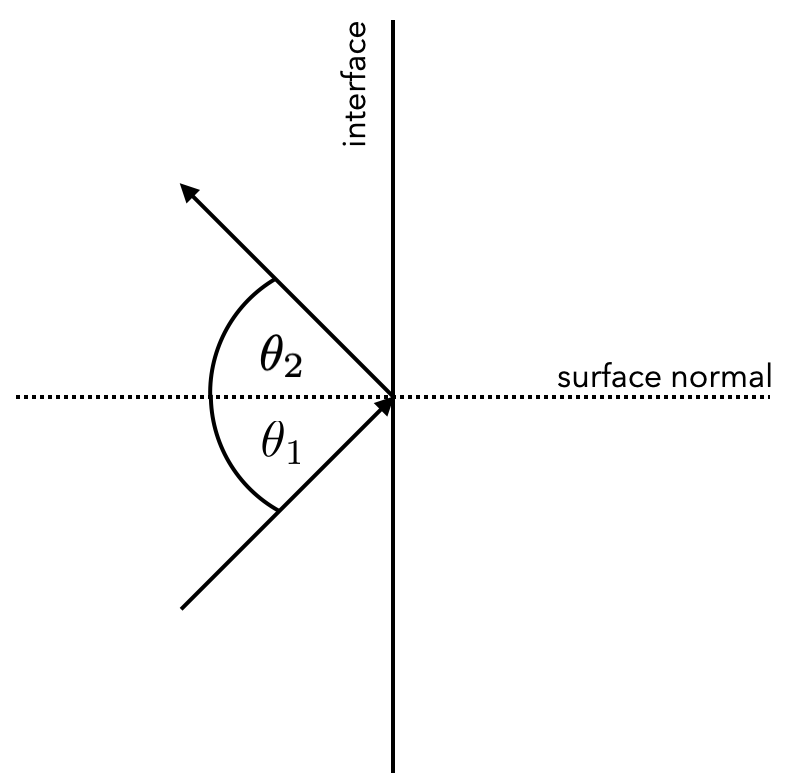
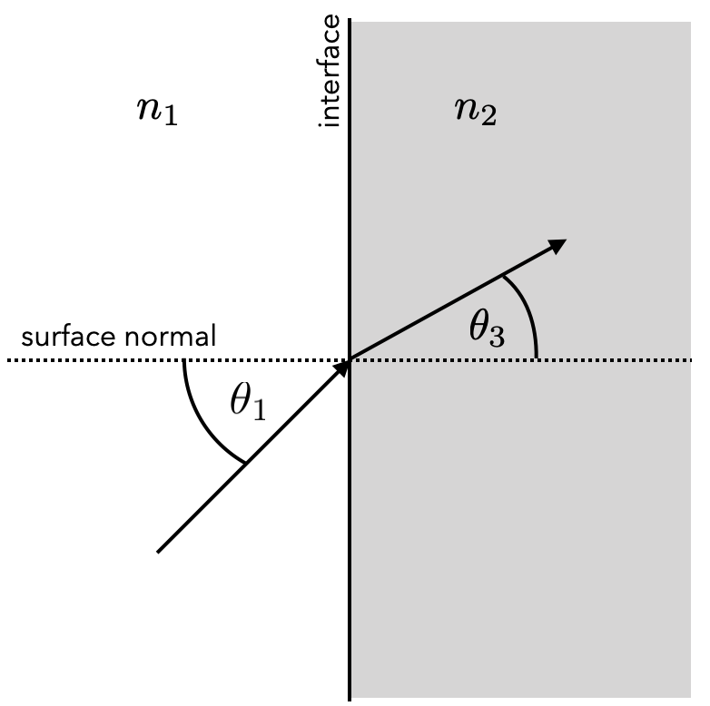
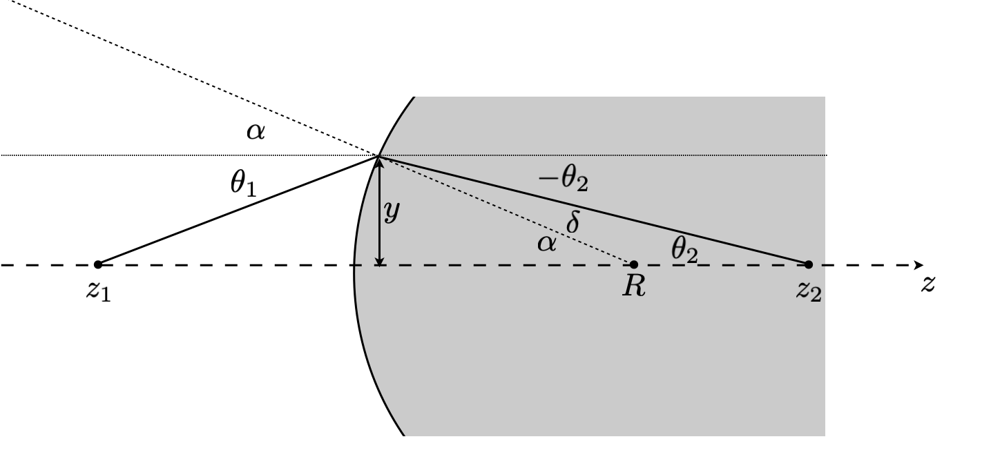

This page was generated from notebooks/L1/1_ray_optics.ipynb.


General Optics#
Ray Optics#
Ray optics delivers the simplest mathematical description of light propagation, which is despite of its simplifications very powerful. However, it does not provide any insights into the physical mechanisms that govern the propagation of light.
Geometrical or ray optics is therefore based on a number of assumptions for light propagation, i.e.
light travels in form of rays, which are emitted by light sources and detected by detectors
the effect of a medium on the light propagation is described by the refractive index \(n=c_{0}/c\)
light takes time to travels a distance \(d\) which is given by \(t=d/c=nd/c_{0}\)
$n d $ therefore amounts to the optical path length
You see on these assumptions, that this is not really satisfying. We do neither really know what is propagation with the speed of light, nor where the refractive index comes from. This is something we need to address later, when we consider electromagnetic waves.
Based on this, we also can only infer from observations the laws that govern ray optics, i.e. the law of reflection and refraction.
Law of reflection#
|

Figure 1: Law of reflection |
The law of reflection is the simplest one. It states, that the angle of incidence and the angle of reflection are always equal.
\begin{equation} \theta_{1}=\theta_{3} \end{equation}
Law of refraction#
|

Figure 1: Law of refraction |
\begin{equation} n_{1}\sin(\theta_{1})=n_{2}\sin(\theta_{2}) \end{equation}
The law of refraction is known as Snell’s law and relates the incident angle \(\theta_1\) with the angle of the refracted ray \(\theta_2\).
With this law of refraction, there are a number of special situations, that occur. This is for example the total internal refraction. You can explore different situations with the short program below which gives you control over the refractive indices and the incident angles.
Refraction on spherical boundary#
Many of the interesting situations of refraction occur on interfaces, which are curved. Lenses, for example, have curved surfaces and the angles of refraction therefore change depending on the position. We can model in the simplest case by a spherical surface or in 2D just by a circular interface. The diagram below shows the definition of such a situation.
|

Figure 1: Refraction at a spherical surface |
According to the drawing we have the following relation
\begin{equation}-\theta_2+(\pi-\alpha)+\delta=\pi \end{equation}
which results in
\begin{equation} -\theta_2+\pi-\alpha+\delta=\pi \end{equation}
and finally
\begin{equation} \delta=\alpha+\theta_2 \end{equation}
We further can identify the following relations for the angles \(\alpha\), \(\theta_1\) and \(\theta_2\)
\begin{equation} \sin(\alpha)=\frac y R,\, \tan(\theta_2)=\frac{y}{z_2},\, \tan(\theta_1)=\frac{y}{z_1} \end{equation}
from the radius of curvature of the spherical surface \(R\), the distance \(y\) where the ray hits the spherical surface and the object point and image point distance \(z_1\) and \(z_2\).
\begin{equation} n_1\sin(\alpha+\theta_1)=n_2\sin(\alpha+\theta_2) \end{equation}
This is a nonlinear equation and difficult to solve. Yet we can just linearize the angular functions just by assuming that all angles are small. This approximation is called the paraxial approximation and very important in optics. It not only means that the angle are small, but also that the light rays propagate close to the optical axis.
Using the linearization: \(\sin(x)\approx x\) we now obtain
\begin{equation} n_1(\alpha+\theta_1)=n_2(\alpha-\theta_2) \end{equation}
Expanding the brackets leads to \begin{equation} n_1\alpha+n_1\theta_1=n_2\alpha-n_2\theta_2 \end{equation}
which we can transform into
\begin{equation} n_2\theta_2=(n_1-n_2)\alpha+n_1\theta_1 \end{equation}
to finally obtain
\begin{equation} \theta_2=-\frac{n_2-n_1}{n_2}\alpha+\frac{n_1}{n_2}\theta_1 \end{equation}
There is still the angle \(\alpha\) we can remove by inserting the corresponding relations we have noted on the top. This leads to
\begin{equation} \theta_2\approx \frac{n_1}{n_2}\theta_1-\frac{n_2-n_1}{n_2R}y \end{equation}
Conjugated Planes#
The importance of the result above can be seen from a number of transformations
\begin{equation} \frac{\Delta y}{z_2}=\frac{y}{z_1} \end{equation}
\begin{equation} (1)\quad \theta_1=0 \quad \Rightarrow \quad \theta_2^1=-\frac{n_2-n_1}{n_2 R}y, \quad \tan \theta_2=\frac{\Delta y+y}{z_2} \end{equation}
\begin{equation} (2) \quad \theta_1=\theta_2 \quad n_2 \theta_2^2=n_1\theta_1^2 \end{equation}
\begin{equation} \frac{\Delta y+y}{z_2}=-\frac{n_2-n_1}{n_2R}y \end{equation}
\begin{equation} \Delta y+y=-\frac{n_2-n_1}{n_2R}yz_2, \quad \frac{\Delta y}{z_2}=\frac{y}{z_1} \end{equation}
\begin{equation} y\left(\frac{z_2}{z_1}+1\right)=-\frac{n_2-n_1}{n_2R}z_2y, \quad \Delta y=\frac{y}{z_1}z_2 \end{equation}
\begin{equation} \left(\frac{z_2}{z_1}+1\right)=-\frac{n_2-n_1}{n_2R}z_2 \end{equation}
\begin{equation} \frac{1}{z_1}+\frac{1}{z_2}=-\frac{n_2-n_1}{n_2R} \end{equation}
The latter equation is actually already at the level of a single spherical surface showing, that all points from a plane at the location \(z_1\) is imaged to points in a plane \(z_2\). There is no dependence on the point where the rays hit the spherical surface. The two planes are called conjugated planes. They belong together and form the foundation of imaging.
Biconvex Lens#
We can now take the equation for a single spherical surface and derive an expression for two spherical surfaces, which form a lens.
\begin{equation} \theta_2=\frac{n_1}{n_2}\theta_1-\frac{n_2-n_1}{n_2R}y \end{equation} first refraction, \(n_1=1, n_2=n\)
\begin{equation} \theta_t=\frac 1 n \theta_1-\frac{n-1}{nR_1}y \end{equation}
second refraction, \(n_1=n, n_2=1\)
\begin{equation} \theta_t \rightarrow \theta_1, y \rightarrow y \end{equation}
\begin{equation} \theta_2=\frac n 1 \theta_t-\frac{1-n}{R_2}y \end{equation}
\begin{equation} \theta_2=\frac n 1 \left(\frac 1 n \theta_1-\frac{n-1}{nR_1} y\right)-\frac{1-n}{R_2}y \end{equation}
\begin{equation} \theta_2=\theta_1-\frac{n-1}{R_1}y-\frac{1-n}{R_2}y=\theta_1-\left(\frac{n-1}{R_1}+\frac{1-n}{R_2}\right)y \end{equation}
\begin{equation} \frac{n-1}{R_1}+\frac{1-n}{R_2}=(n-1)\left(\frac{1}{R_1}-\frac{1}{R_2}\right)=\frac 1 f \end{equation}
lens maker equation, it tells what radii to use if you want to make a lens with \(f\)
\begin{equation} \theta_2=\theta_1-\frac y f \end{equation}
\begin{equation} \theta_2=\frac{y}{z_2},\quad \theta_1=\frac{y}{z_1} \end{equation}
\begin{equation} \frac{y}{z_2}=\frac{y}{z_1}-\frac y f \quad \Rightarrow \quad \frac{1}{z_1}+\frac{1}{z_2}=\frac 1 f \end{equation}
flipped the sign of one \(z\) since it is going to the other direction
\(\Rightarrow\) from the ??? rays
\begin{equation} y_2=-\frac{z_2}{z_1}y_1 \end{equation}
magnification
two equations which can be used to ??? images of refractive optics in the limit of paraxial approximation
\begin{equation} \sin(x)\approx x-\frac{x^3}{6}+\frac{x^5}{120}+ \dots \end{equation}
that is
\begin{equation} \frac{x^3}{6} \ll x \quad \rm{or} \quad \frac{x^2}{6} \ll 1 \quad \rm{or} \quad x \ll 0.4\:\:\rm{in~radians} \end{equation}
this is not true for microscopy lenses, for example, there we have angles up to 80°, but it is then still a first oder approximation
Aberration Characterization and Zernike Polynomials#
The Zernike polynomials are a set of orthonormal polynomials that are widely used in optics to describe wavefronts and to characterize optical aberrations. As we did not discuss wavefronts and waves yet, this is a more advanced topic here and only for information. Zernike polynomials are defined over the unit disk and are particularly useful because they are orthogonal under the inner product, which involves integration over the unit circle. This makes them suitable for decomposing a wavefront into a sum of orthogonal modes, each representing a different type of aberration.
The general form of the Zernike polynomials can be expressed in polar coordinates
, where
is the radial distance from the origin (normalized to the unit circle) and
is the azimuthal angle. The Zernike polynomials are defined as:
where
is a non-negative integer,
is an integer such that
is even and
, and
is the radial polynomial given by:
The radial polynomials
are only dependent on the radial distance
, and they modulate the angular functions
and
that describe the azimuthal variation of the wavefront.
The Zernike polynomials are indexed in several ways, with one common method being the Noll index, which provides a single index
to each polynomial. Another method uses the pair
to index the polynomials, where
indicates the order of the polynomial and
its azimuthal frequency.
These polynomials are particularly useful in optics and ophthalmology for describing the shape of optical wavefronts and the aberrations of optical systems, including the human eye. They allow for the decomposition of a complex wavefront into simpler, orthogonal components, each corresponding to a specific type of aberration, such as defocus, astigmatism, coma, etc.
The plots below visualize the Zernike Polynomials up to a certain order.
[12]:
def radial_polynomial(n, m, rho):
"""
Compute the radial component of the Zernike polynomial.
"""
R = np.zeros_like(rho)
for k in range((n - abs(m)) // 2 + 1):
R += ((-1)**k * np.math.factorial(n - k) /
(np.math.factorial(k) * np.math.factorial((n + abs(m)) // 2 - k) *
np.math.factorial((n - abs(m)) // 2 - k))) * rho**(n - 2*k)
return R
def zernike_polynomial(n, m, rho, phi):
"""
Compute the Zernike polynomial.
"""
if m >= 0:
return radial_polynomial(n, m, rho) * np.cos(m * phi)
else:
return radial_polynomial(n, -m, rho) * np.sin(-m * phi)
x = np.linspace(-1, 1, 400)
y = np.linspace(-1, 1, 400)
xx, yy = np.meshgrid(x, y)
rho = np.sqrt(xx**2 + yy**2)
phi = np.arctan2(yy, xx)
mask = rho > 1
rho[mask] = np.nan
fig, axs = plt.subplots(3, 6, figsize=(8, 4))
axs = axs.flatten()
index = 0
for n in range(6):
for m in range(-n, n+1, 2):
if index >= len(axs):
break
Z = zernike_polynomial(n, m, rho, phi)
Z[mask] = np.nan # Apply mask
ax = axs[index]
c = ax.imshow(Z, extent=(-1, 1, -1, 1), origin='lower')
ax.set_title(f'n={n}, m={m}')
ax.axis('off')
index += 1
plt.tight_layout()
plt.show()
Total Internal Reflection#
If we now consider the outgoing angle \(\theta_2\) as a function of the incident angle \(\theta_1\), we obtain a characteristic plot, which looks for the materials glass (\(n=1.5\)) and air (\(n=1\)) like below. If the incident light is coming from air and following onto glass, we can change the incident angle up to \(90\) degree, but only reach an outgoing angle of \(41.8\) degree. If we reverse the materials, however, an outgoing angle is reached and an angle of incidence of \(41.8\) degree. Light at larger incident angles is not anymore refracted out of the glass but reflected into the glass. Therefore, this phenomenon is called total internal reflection. It has some fantastic applications.
[54]:
def snell_law(n1, n2, theta1_degrees):
theta1_radians = np.radians(theta1_degrees)
sin_theta2 = n1 / n2 * np.sin(theta1_radians)
# Check for total internal reflection
if sin_theta2 > 1:
# Total internal reflection, no refraction
return np.nan # Use NaN to indicate no refraction occurs
else:
theta2_radians = np.arcsin(sin_theta2)
return np.degrees(theta2_radians)
theta1 = np.linspace(0, 90, 1000)
n1_glass = 1.5
n2_air = 1.0
theta2_glass_to_air = np.array([snell_law(n1_glass, n2_air, angle) for angle in theta1])
plt.figure(figsize=(4, 4),dpi=150)
plt.plot(theta1, theta2_glass_to_air,"k", label='n1=1.5 to n2=1.0')
theta_c = np.degrees(np.arcsin(n2_air / n1_glass))
plt.axvline(x=theta_c, color='k', linestyle='--', label=f'Critical angle θc = {theta_c:.2f}°')
n1_glass = 1.0
n2_air = 1.5
theta2_glass_to_air = np.array([snell_law(n1_glass, n2_air, angle) for angle in theta1])
plt.plot(theta1, theta2_glass_to_air,"k", label='n1=1.5 to n2=1.0')
plt.plot(theta1, theta1,"k")
plt.xlabel(r'$θ_1$ (degrees)')
plt.ylabel(r'$θ_2$ (degrees)')
plt.xlim(0, 90)
plt.ylim(0, 90)
plt.grid(True)
plt.show()
[61]:
fig, ax = plt.subplots(figsize=(4, 4))
fig.canvas.header_visible = False
update(n1=1.,n2=1.5,angle=41.9)
[ ]: